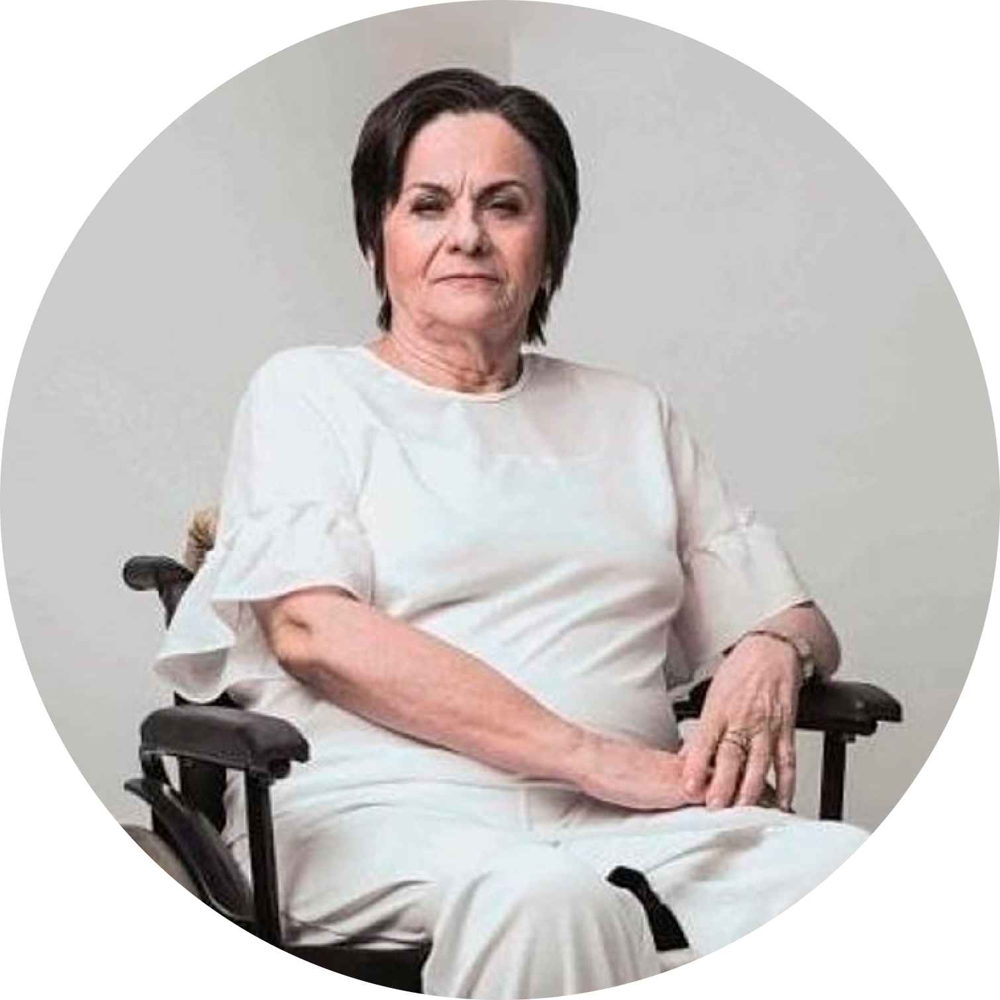

Papo de Homem para Homem: A Mudança Começa pelo Diálogo
A violência doméstica não é apenas um problema das mulheres; é um problema de toda a sociedade e, fundamentalmente, uma responsabilidade dos homens. O projeto Papo de Homem para Homem é uma iniciativa da Polícia Judiciária Civil do Estado de Mato Grosso criada para preencher uma lacuna vital na segurança pública: a educação e a conscientização do público masculino.
Acreditamos que a repressão policial é necessária, mas a verdadeira transformação cultural vem através da informação. Este é um espaço seguro para abrir um diálogo honesto, desconstruir preconceitos e encorajar homens a assumirem o protagonismo na luta pelo fim da violência contra a mulher. Junte-se a nós nesta causa. A coragem de mudar começa agora.
Histórico da Lei
A Lei Maria da Penha foi criada para responder a um problema observado ao longo da históriada humanidade, na maior parte das civilizações: a violência sofrida por mulheres. Os estudos na área apontam dados preocupantes, indicando que a maior parte dos assassinatos de mulheres (feminicídios) e de outras violências que elas sofrem ocorre nessas condições: em um ambiente onde deveriam se sentir mais protegidas (a própria casa), e cometidos por parte de quem menos esperam (maridos, namorados, parceiros, filhos e ex-parceiros).
No Brasil, cerca de 80% dos casos de agressão contra mulheres foram cometidos por parceiros ou ex parceiros.
Ou seja: percebemos que a violência contra as mulheres ocorre em nossa cultura porque elas se encontram em condições menos vantajosas em relação aos homens, especialmente no ambiente doméstico.
O Brasil é o 5º país do mundo em número de assassinatos de mulheres.
Diante disso, nas últimas décadas muitas mulheres lutaram para mudar essa realidade e ter direitos (inclusive o direito à vida) iguais aos dos homens. Surgiram os movimentos feministas que denunciaram milhares de atrocidades sofridas por mulheres todos os dias, em diversos ambientes, na maioria dos países. Os órgãos internacionais de defesa dos direitos humanos passaram também a defender o direito das mulheres a viver sem violência. Enfim, essa luta em vários lugares do mundo fez com que os governos percebessem a gravidade do problema e passassem a ter leis de proteção às mulheres.
Entre 1980 e 2013, ocorreram no Brasil mais de 100.000 assassinatos de mulheres.
E as estatísticas indicam que esse número aumenta a cada ano — mesmo após a criação da Lei Maria da Penha.
Assim, a Lei Maria da Penha é o resultado da luta de milhares de mulheres que foram vítimas da violência. Foi elaborada após a cobrança da Organização dos Estados Americanos – OEA (o órgão internacional responsável por denunciar a violação de acordos internacionais), para que o governo do Brasil tomasse providências no sentido de proteger as mulheres de seu país contra esse tipo de violência – infelizmente tão comum em nossa cultura.
A Lei nº 11.340, conhecida como “Lei Maria da Penha”, foi sancionada pelo Presidente da República em 2006. A lei brasileira que protege as mulheres contra a violência recebeu o nome de Maria da Penha em homenagem à farmacêutica cearense Maria da Penha Maia Fernandes. Vítima de diversas violências graves por parte do marido, ela quase foi morta e sofreu seqüelas graves (como a perda do movimento das pernas). Maria da Penha lutou para proteger a própria vida e para mostrar à sociedade a importância de se proteger as mulheres da violência sofrida no ambiente mais inesperado, seu próprio lar, e advinda da pessoa de quem menos se espera: seu companheiro, marido ou namorado.
A Lei Maria da Penha é considerada uma das legislações de proteção à mulher mais avançadas do mundo. Dentre os vários avanços que ela traz estão:
- A criação de Juizados especializados no assunto, o que deve garantir uma melhor compreensão de servidores da Justiça e de juízas e juízes sobre o problema, além fazer com que o processo judicial seja mais rápido;
- As medidas protetivas de urgência;
- A mulher só pode solicitar o arquivamento do processo judicial perante a juíza ou juiz, o que garante que ela seja ouvida com maior cuidado. Isso também pode evitar que o processo seja arquivado devido à mulher sofrer ameaças, chantagens ou intimidações;
- A compreensão do problema a partir da questão de gênero.
Quando a Lei fala sobre gênero, a maioria das pessoas já pensa que isso significa negar as diferenças entre homens e mulheres. Mas não é assim! Ninguém discute que essas diferenças existem, como por exemplo a gravidez, a amamentação e os órgãos sexuais. O que a Lei e os estudos na área mostram é que não se pode justificar outras diferenças como, por exemplo, o acesso a salários iguais, a distribuição de tarefas na casa e com os filhos, como se comportar, o que vestir, como expressar seus sentimentos, entre outras coisas. Essas diferenças foram construídas na cultura, não são naturais! E acabam justificando muitas injustiças e violências cometidas contra as mulheres, que ficam assim colocadas em uma posição inferior e de subordinação em relação aos homens.
A Constituição Federal Brasileira garante:
“Art. 5° Todos são iguais perante a lei, sem distinção de qualquer natureza, garantindo-se aos brasileiros e aos estrangeiros residentes no País a inviolabilidade do direito à vida, à liberdade, à igualdade, à segurança e à propriedade, nos termos seguintes:
I – homens e mulheres são iguais em direitos e obrigações, nos termos desta Constituição;”
Machismo e Violência
Em nossa cultura é muito comum o pensamento de que mulheres devem agir de determinada maneira, e os homens de outra. Desde pequenos os meninos são incentivados a valorizar a força física, a dominação, a agressividade e a satisfação de seus desejos (inclusive sexuais). Por outro lado, as meninas são reconhecidas por sua beleza, delicadeza, submissão, dependência, sentimentalismo, passividade e cuidado com os outros (mesmo que isso signifique deixar de cuidar de si mesma).
Esse tipo de separação entre o que é esperado das mulheres e dos homens significa colocar as mulheres em posição desvantajosa na sociedade, já que o homem é colocado geralmente em uma posição de maior poder e de dominação. Isso é o machismo!
Exemplos de práticas machistas
- Atribuir somente à mulher a responsabilidade pela casa e pelos filhos;
- Esperar da mulher que sempre agrade seu parceiro;
- Achar que é obrigação da mulher satisfazer o marido sexualmente, inclusive contra a própria vontade.
E o que o machismo tem a ver com violência doméstica?
Em uma posição de maior poder em relação às mulheres, estas acabam tendo muitos direitos violados. Isso porque muitas vezes os homens se acham com o direito de usar a violência, caso a mulher não aceite “cumprir” o papel que a cultura lhe impõe.
A Lei Maria da Penha veio para equilibrar essa situação injusta para as mulheres, chamando a atenção de toda a sociedade para o fato de que todos têm direitos iguais – e que ninguém pode usar a violência contra outra pessoa para dominá-la.